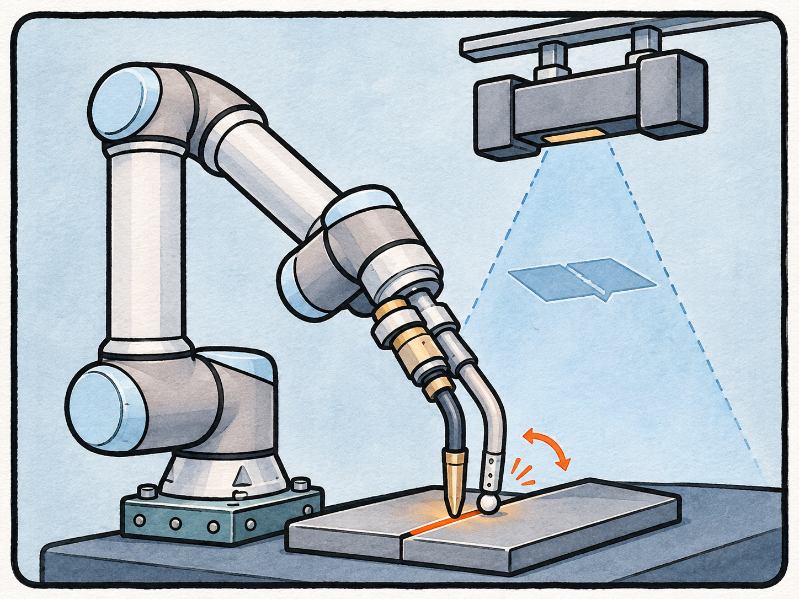
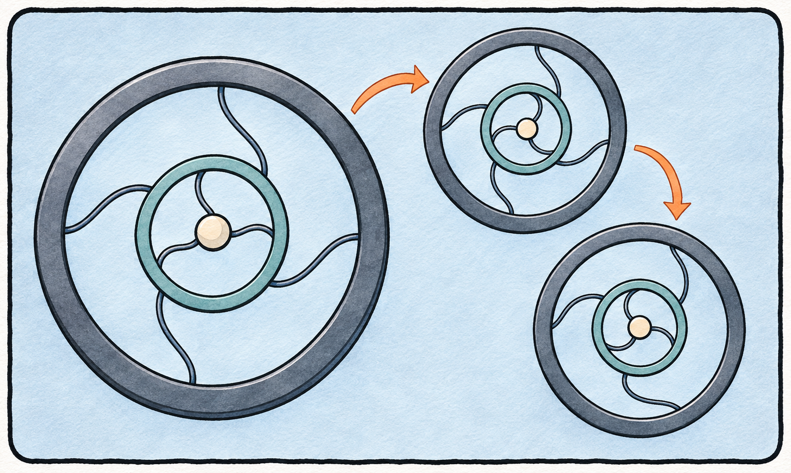

ActiveSPN: Active Soft Polyhedral Networks With Pose Estimation for In-Finger Object Manipulation Journal Article
IEEE Robotics and Automation Letters, vol. 10, no. 8, pp. 8115–8122, 2025.
自2026年7月至今，加入深圳职业技术大学机电工程学院，担任机械电子工程技术专业讲师，组建感知与灵巧操作实验室（SenseDex Lab），是IEEE会员、Design Society会员，任机器人顶刊TRO审稿人。先后在国际机器人产业基地Xbotpark、港科大机器人研究所从事人工智能与机器人算法研究与应用开发。2019年毕业于广东工业大学粤港机器人学院获得本科学位，2022年毕业于广东工业大学自动化学院控制科学与工程获得硕士学位，2026年毕业于南方科技大学智能制造与机器人专业获得工学博士学位。近五年，作为项目骨干参与国家自然科学基金青年科学基金项目、深圳市科技创新委员会稳定支持计划面上项目及技术攻关重点项目，并在深圳职业技术大学签署横向项目1项。在包括IEEE Robotics and Automation Letters (IEEE RA-L)、IEEE International Conference on Robotics and Automation (IEEE ICRA)等人工智能与机器人期刊与国际会议上发表高水平论文8篇。担任《机器人学及应用》、《自动控制原理》等课程的责任教师。
Since July 2026, I have been a lecturer in the Mechatronics Engineering Technology program at the School of Mechanical and Electrical Engineering, Shenzhen Polytechnic University, where I established the Sensing and Dexterous Manipulation Lab (SenseDex Lab). I am a member of IEEE and the Design Society, and serve as a reviewer for IEEE Transactions on Robotics (TRO). I previously worked on research and application development in artificial intelligence and robotics algorithms at Xbotpark, an international robotics industry hub, and the HKUST Robotics Institute. I received my bachelor’s degree from the Guangdong-Hong Kong Institute of Robotics at Guangdong University of Technology in 2019, my master’s degree in Control Science and Engineering from its School of Automation in 2022, and my Ph.D. in Engineering, specializing in Intelligent Manufacturing and Robotics, from Southern University of Science and Technology in 2026. Over the past five years, I have contributed as a core team member to projects supported by the National Natural Science Foundation of China’s Young Scientists Fund, general projects under the Shenzhen Science and Technology Innovation Commission’s Stable Support Program, and the Commission’s key technology research projects. I have also signed one contract research agreement at Shenzhen Polytechnic University. I have published eight papers in AI and robotics journals and international conferences, including IEEE Robotics and Automation Letters (IEEE RA-L) and the IEEE International Conference on Robotics and Automation (IEEE ICRA). I serve as the lead instructor for courses including Robotics and Applications and Principles of Automatic Control.
Lecturer
School of Mechanical and Electrical Engineering
Shenzhen Polytechnic University
4th Floor, Houde Building, Xili Campus
Shenzhen, Guangdong, China
深圳职业技术大学西丽校区厚德楼4楼
IEEE Robotics and Automation Letters, vol. 10, no. 8, pp. 8115–8122, 2025.
Biomimetic Intelligence and Robotics, article 100326, 2026, Published online.
2024 6th International Conference on Reconfigurable Mechanisms and Robots (ReMAR), pp. 627–632, 2024.
IEEE Robotics and Automation Letters, vol. 6, no. 3, pp. 5199–5206, 2021.
AI Open, vol. 6, pp. 204–219, 2025.
Mathematical Problems in Engineering, vol. 2021, no. 1, article 9825790, 2021.
IEEE Access, vol. 9, pp. 139958–139967, 2021.
Soft Science, vol. 5, no. 3, article 36, 2025.
Submitted to IEEE Robotics and Automation Letters (RA-L).

Submitted to Materials & Design.

申请人：深圳职业技术大学
近年主持及参与的纵向与横向科研项目。
横向项目
主持：李森
深圳市科技创新委员会稳定支持计划面上项目
参与角色：项目骨干（项目组排名第2的参与人员）
深圳市科技创新委员会技术攻关重点项目
参与角色：项目骨干（项目组排名第2的参与人员）
国家自然科学基金青年科学基金项目
参与角色：项目骨干（项目组排名第2的参与人员）